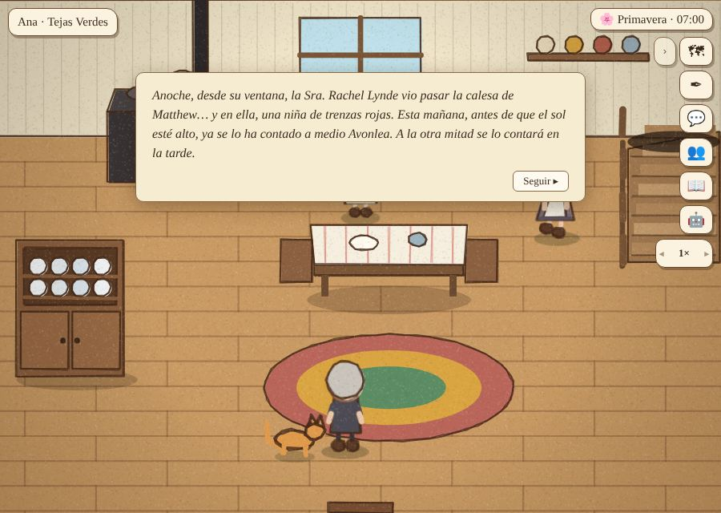

Bien
La Sra. Rachel se entera
Después del desayuno, una tarjeta: anoche, desde su ventana, la Sra. Rachel vio pasar la calesa de Matthew con una niña de trenzas rojas, y ya se lo ha contado a medio Avonlea. Desde ella, la noticia pasa de un vecino a otro cuando conversan.